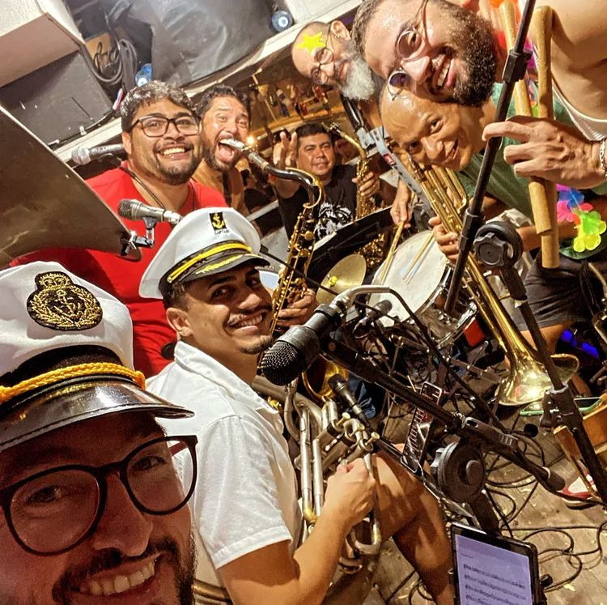
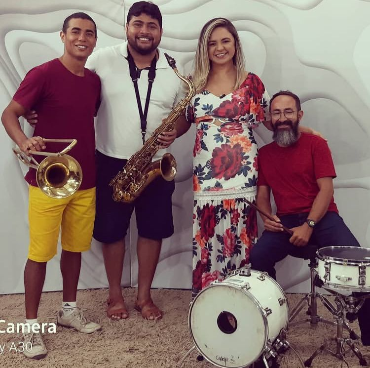
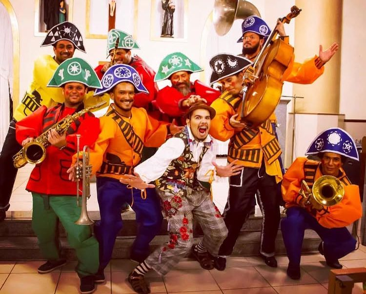

Ensaios abertos!
Quarta — das 19h às 20h30
Domingo — das 16h às 17h30
// Venham participar desse momento massa com a gente.
Destaques
Evento
Pode Inté For no Alô Frida 2025.

Participações
Participação da Pode Inté For no programa da Aline Linhares na TCM Mossoró.

Evento
Participação da Pode Inté For no Mossoró Cidade Junina (MCJ 2018).

Acervo virtual
Pesquise fotos, partituras, documentos e registros sobre o universo do frevo e da cultura popular.